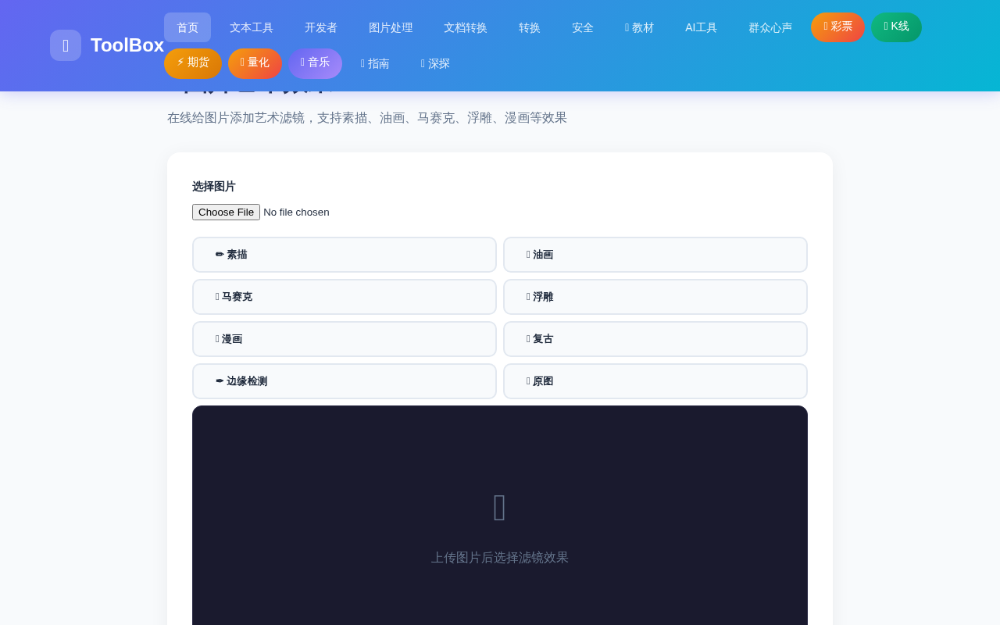
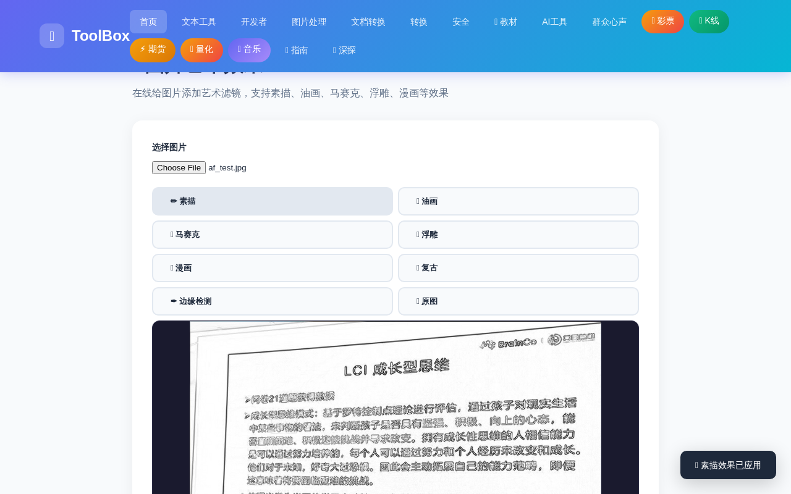
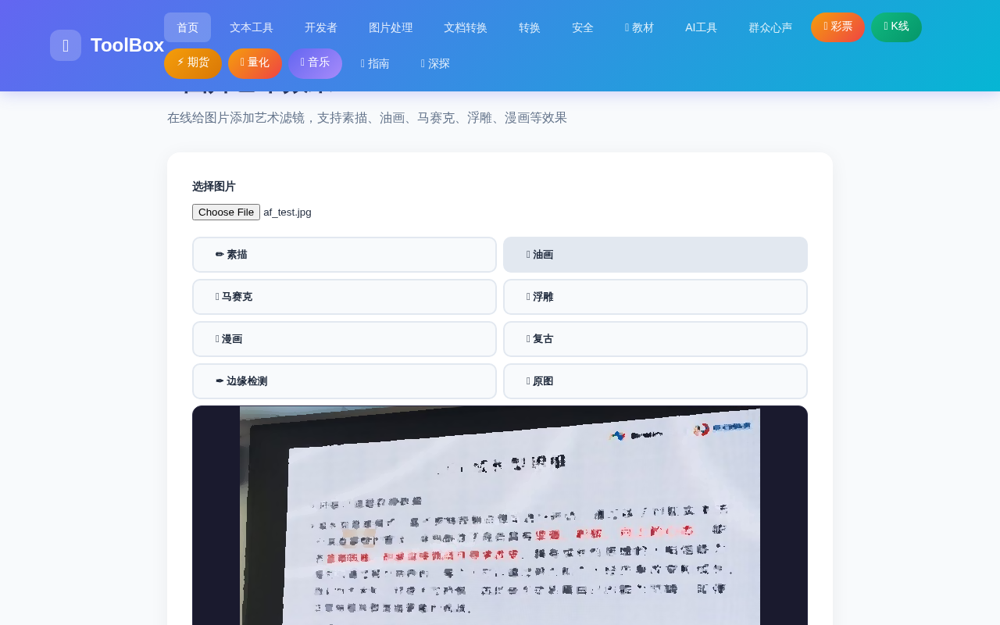
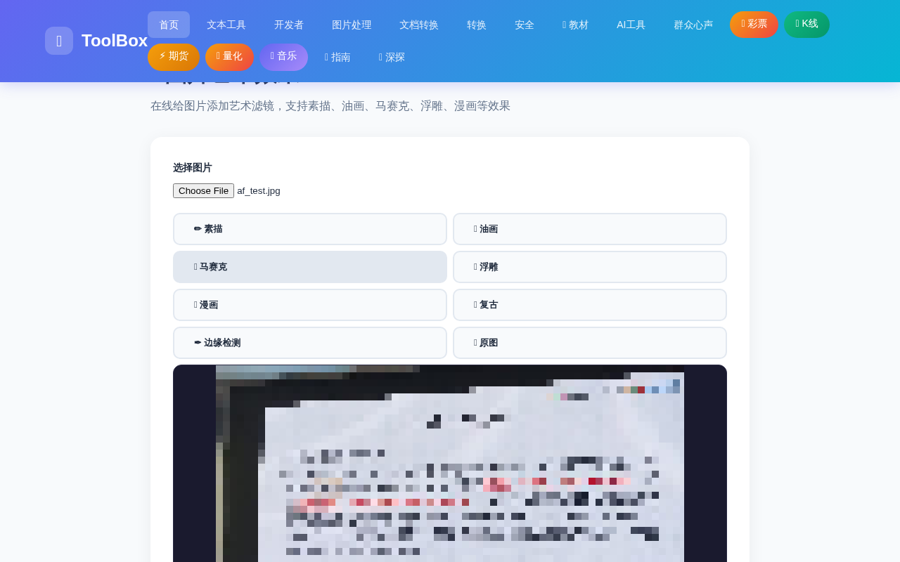
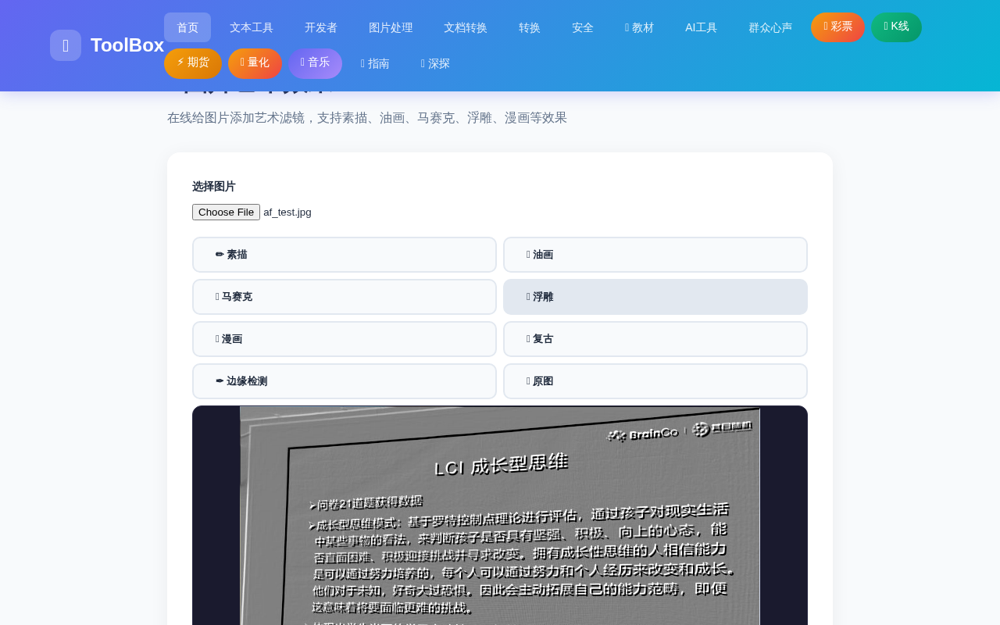

看到别人朋友圈里那些像手绘一样的照片，是不是很羡慕？想给自拍加个素描滤镜，想给风景照来点油画质感，想用马赛克挡住车牌和脸——这些听起来要下载 App、开会员才能做的事，其实在浏览器里 30 秒就能搞定。
图片艺术效果 就是这样一个免费工具：上传照片后，一键套用 素描、油画、马赛克、浮雕、漫画、复古、边缘检测 7 种艺术滤镜，效果实时预览，满意后一键下载高清 PNG。
灵感来源于 Prisma（$7.99/月）、PicsArt Premium（$11.99/月）等付费艺术滤镜应用——而这里完全免费，图片也只在你的浏览器本地处理，不会上传到任何服务器。
进入 ToolBox 首页，点击「图片处理」分类，找到「✨ 图片艺术效果」工具卡片进入。界面分为三块：上方是图片选择、中间是 7 个滤镜按钮、下方是实时预览画布。目前画布是空的，显示"上传图片后选择滤镜效果"的提示。

点击「选择图片」按钮，从电脑里选一张照片（支持 JPG / PNG / WebP 等常见格式）。上传后原图会立刻显示在预览画布中——此时还没有任何滤镜，方便你对比"处理前 / 处理后"的差别。
上传完成后，点一下滤镜按钮，效果立刻呈现在画布上，无需等待、无需转圈。
✏️ 素描 会把照片变成铅笔手绘质感——黑白灰的笔触、干净的线条，像刚刚画完的速写；🎨 油画 则强化色彩和笔触感，让照片像画布上的油彩，特别适合风景和人物照。


除了素描和油画，还有 5 种风格等你尝试：
| 滤镜 | 效果特点 | 适合场景 |
|---|---|---|
| 🧩 马赛克 | 像素块化，模糊细节 | 遮挡人脸、车牌、隐私信息 |
| 🏛️ 浮雕 | 立体雕刻感，灰底凸起 | 创意海报、装饰画 |
| 🖍️ 漫画 | 卡通化处理，颜色明快 | 头像、趣味分享 |
| 📻 复古 | 做旧色调，怀旧胶片感 | 怀旧主题、vlog 封面 |
| ✒️ 边缘检测 | 线条轮廓提取，白底黑线 | 线稿素材、设计底图 |


选到满意的效果后，点击「⬇️ 下载效果图」按钮，处理好的图片会以 PNG 格式保存到你的电脑。整个过程不过 30 秒。
Q：支持哪些图片格式？有没有大小限制？
支持 JPG、PNG、WebP、BMP 等常见格式。因为是本地处理，没有严格的大小限制，但超大图（如几十 MB 原图）处理时会稍慢，建议先用普通分辨率图片。
Q：图片会被上传到服务器吗？隐私安全吗？
不会。所有滤镜都是在你浏览器的 Canvas 画布本地计算的，图片从选择到下载都不离开你的设备，私密照片可以放心处理。
Q：效果不满意怎么办？能回到原图吗？
当然可以。随时点击「🔄 原图」按钮就能回到未处理的照片，也可以继续换其他滤镜叠加对比，直到满意再下载。
📌 30 秒让照片变成艺术品，现在就试试
✨ 去添加艺术滤镜 →